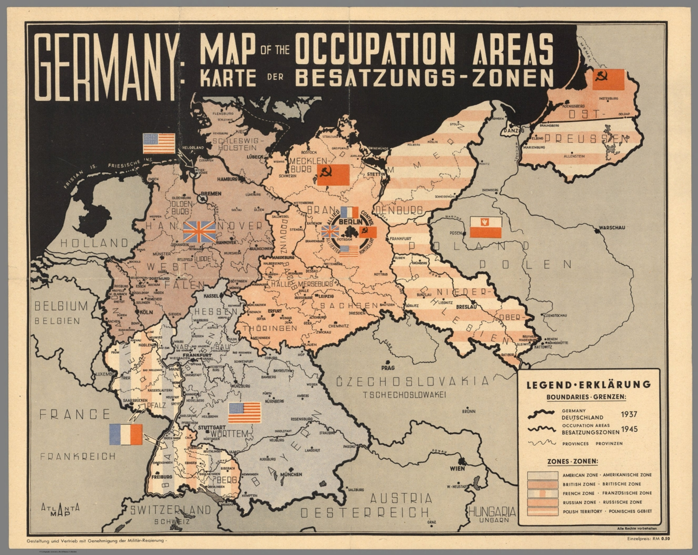
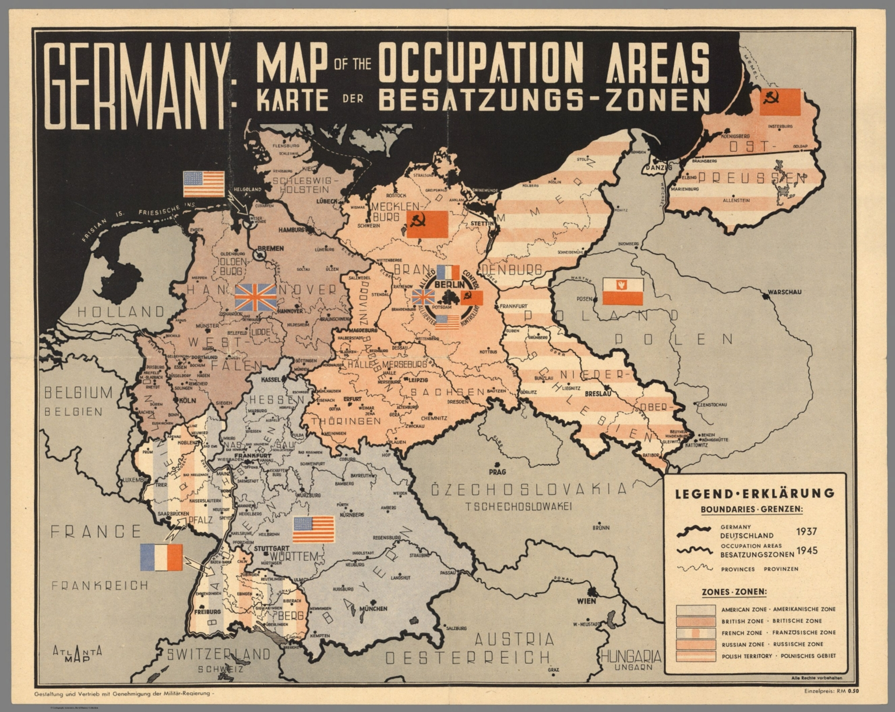

About Me
I am Maxmillan C. Perez, a BS-CpE Student in the University of Rizal System Morong Campus
"Sapagkat ang nagpapakataas ay ibababa at ang nagpapakababa ay itataas"
Personal Info
- Citizenship: Half German, Half Sheperd
- Date of Birth: 18 July 2003
- Age: Doesnt Matter
- Sex: Hindi yan habol ko
- Weight: Bago ka manghusga ng kapwa tignan mo muna sarili mo
- Height: 10ft
Skills
- May takot sa Diyos
- Mapagmahal sa pamilya
- Marunong maghintay
- Hindi ka lolokohin
- Hindi ka iiwan
- Hindi ka sasaktan
Get in Touch
If you have any questions, feedback, or suggestions, feel free to reach out to the developer of this page.
Email: maxmillanperez0318@gmail.com